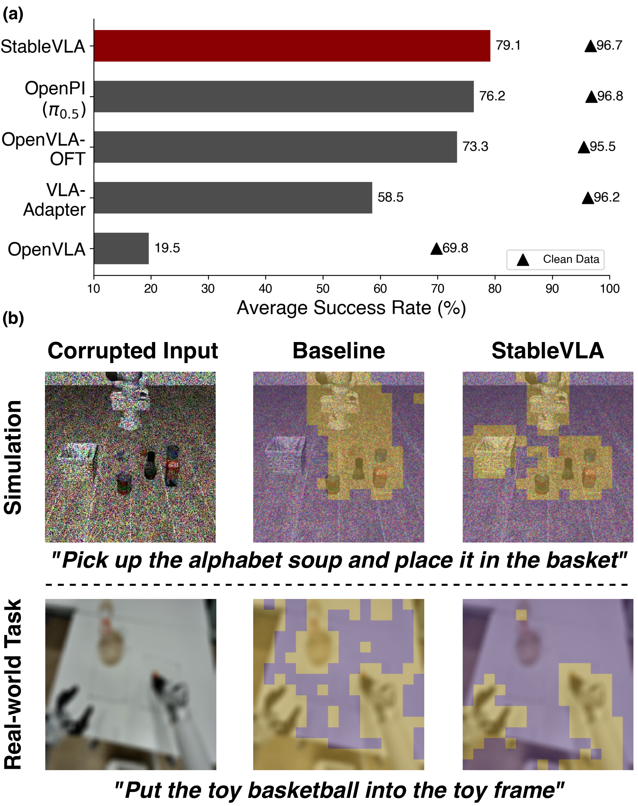
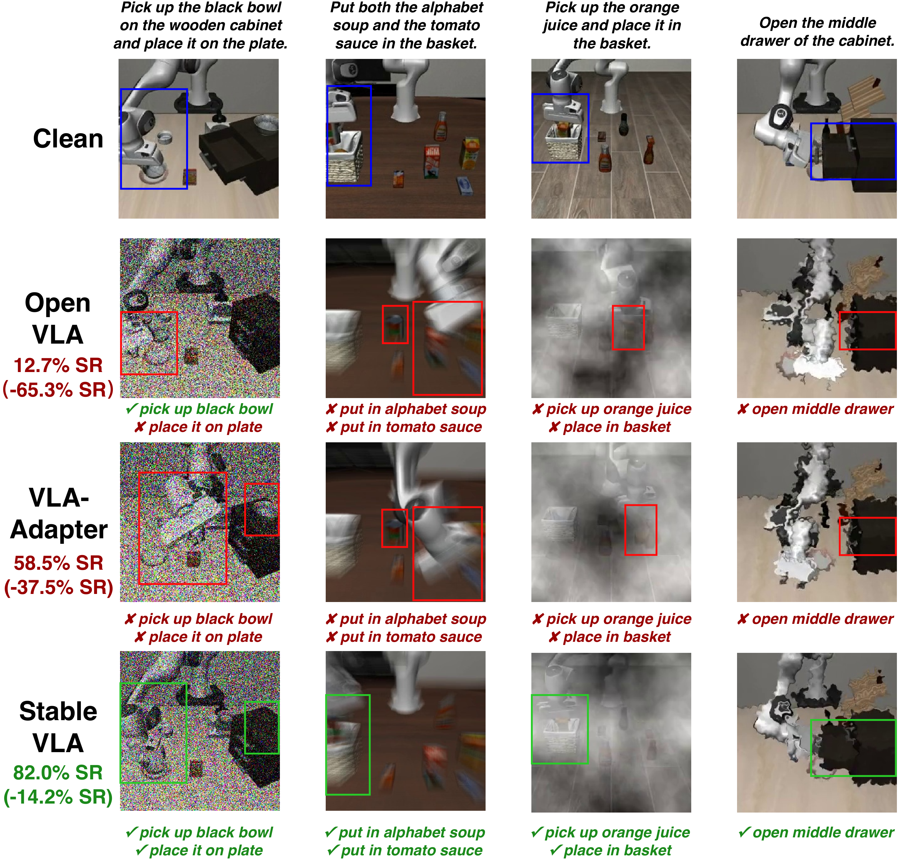
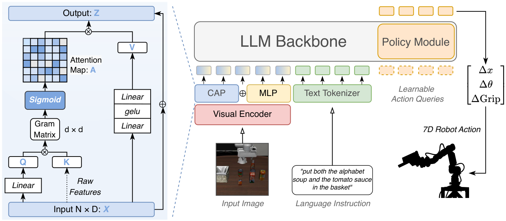
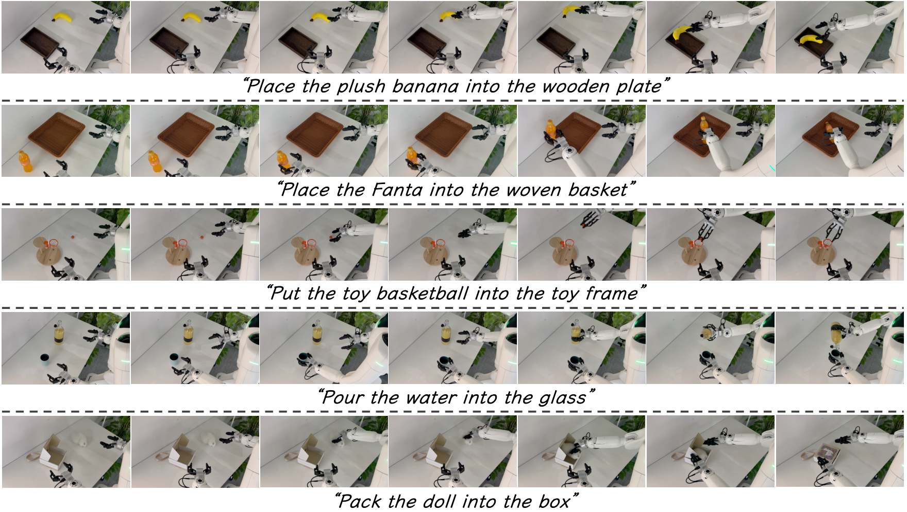

Simulation and real-robot demonstrations of StableVLA under various visual corruptions.

(a) Robustness comparison. Triangle marks and bar charts denote performance on clean and corrupted data (averaged across severities), respectively. StableVLA achieves state-of-the-art zero-shot robustness with a 0.5B backbone, rivaling 7B-scale models. (b) Semantic Clustering Visualization. K-means clustering (K=2) of projector features under severe corruption. StableVLA maintains coherent, object-centric semantic grouping on both simulation and real-world tasks, whereas the baseline fails to isolate task-relevant regions.
Abstract
It is infeasible to encompass all possible disturbances within the training dataset. This raises a critical question regarding the robustness of Vision-Language-Action (VLA) models when encountering unseen real-world visual disturbances, particularly under imperfect visual conditions. In this work, we conduct a systematic study based on recent state-of-the-art VLA models and reveal a significant performance drop when visual disturbances absent from the training data are introduced.
To mitigate this issue, we propose a lightweight adapter module grounded in information theory, termed the Information Bottleneck Adapter (IB-Adapter), which selectively filters potential noise from visual inputs. Without requiring any extra data or augmentation strategies, IB-Adapter consistently improves over the baseline by an average of 30%, while adding fewer than 10M parameters, demonstrating notable efficiency and effectiveness.
Furthermore, even with a 14× smaller backbone (0.5B parameters) and no pre-training on the Open X-Embodiment dataset, our model StableVLA achieves robustness competitive with 7B-scale state-of-the-art VLAs. With negligible parameter overhead (<10M), our approach maintains accuracy on long-horizon tasks and surpasses OpenPi under real-world visual disturbances.
Motivation

VLA models are highly vulnerable to visual corruptions. A model achieving 96% success rate on clean data can drop to near 0% under severe blur. This fragility is shared across VLA-Adapter, OpenVLA, OpenVLA-OFT, and OpenPi-0.5.
Root Cause: The Projector
Through empirical analysis, we identify that the primary source of vulnerability is the projector module that bridges the vision encoder and the LLM backbone.
Standard MLP projectors act as all-pass filters, indiscriminately propagating both task-relevant semantics and visual noise into the policy network.
Our solution: enforce the Information Bottleneck (IB) principle at the modality alignment stage — without any extra data.
Method: IB-Adapter
Architecture of IB-Adapter and StableVLA. We replace the standard MLP projector with Fused IB-Adapter, a dual-stream module combining: (1) Covariance Attention: computes a Gram matrix (D×D) to capture global channel correlations; (2) Sigmoid Gating: independently suppresses noisy channels without forcing competition (unlike Softmax); (3) MLP pathway: preserves fine-grained spatial details for precise manipulation.

IB-Adapter module. Channel-wise covariance gating adaptively suppresses noise channels while preserving task-relevant semantic structure.
Key Insight
Unlike spatial-domain attention in ViTs, IB-Adapter operates in the channel dimension:
- Semantic features and noise are heterogeneously distributed across channels
- Stochastic corruptions are uncorrelated with structural object features → low Gram matrix values
- Sigmoid gates independently suppress noisy channels (gate ≈ 0)
- Result: clean, object-centric focus before features reach the policy
Simply replacing the MLP projector yields +35.2% on LIBERO.
Simulation Results
Robustness radar chart. StableVLA consistently envelopes VLA-Adapter across all corruption categories in all four LIBERO task suites, while matching or exceeding 7B-scale baselines.
Semantic grouping of Fused IB-Adapter output features. K-means clustering (K=2) applied to projector output features under Impulse Noise (severity 3 and 5). StableVLA maintains consistent, object-centric grouping even at high noise levels, while the MLP baseline's features collapse under corruption.
Table 1: Full comparison on LIBERO and CALVIN. Success rate (%) for LIBERO; avg. completed tasks (max 5) for CALVIN. C = Clean, S3/S4/S5 = Severity 3/4/5. Bold = best, underline = second best.
| Training | Method | Spatial | Object | Goal | Long | CALVIN | |||||||||||||||
|---|---|---|---|---|---|---|---|---|---|---|---|---|---|---|---|---|---|---|---|---|---|
| C | S3 | S4 | S5 | C | S3 | S4 | S5 | C | S3 | S4 | S5 | C | S3 | S4 | S5 | C | S3 | S4 | S5 | ||
| OpenX Pretrain |
OpenVLA (7B) | 80.0 | 40.9 | 24.6 | 14.7 | 69.6 | 18.2 | 10.4 | 2.7 | 74.0 | 38.7 | 27.0 | 16.3 | 55.5 | 20.5 | 12.4 | 7.0 | — | |||
| OpenVLA-OFT (7B) | 92.6 | 89.3 | 84.0 | 72.1 | 98.4 | 82.5 | 69.2 | 52.8 | 96.8 | 94.5 | 84.6 | 70.3 | 94.4 | 77.6 | 61.9 | 40.3 | — | ||||
| OpenX+Web Co-train |
OpenPi–0.5 (3B) | 98.4 | 88.3 | 79.0 | 62.4 | 99.4 | 97.1 | 88.4 | 76.4 | 97.2 | 87.2 | 82.5 | 64.2 | 92.0 | 76.1 | 65.6 | 47.7 | — | |||
| VLM Direct FT |
VLA-Adapter (0.5B) | 96.0 | 93.7 | 83.3 | 58.5 | 96.8 | 71.0 | 44.1 | 29.3 | 97.4 | 79.5 | 64.7 | 47.3 | 94.4 | 63.5 | 41.0 | 26.2 | 4.14 | 2.56 | 1.89 | 1.44 |
| StableVLA (0.5B) ★ | 96.2 | 94.4 | 92.1 | 82.0 | 98.8 | 92.4 | 83.6 | 70.2 | 98.0 | 93.4 | 85.0 | 71.9 | 93.6 | 76.3 | 62.4 | 45.3 | 4.17 | 2.77 | 2.11 | 1.51 | |
Real-Robot Experiments
Evaluated on Astribot S1 dual-arm robot across 4 tasks under Gaussian noise, defocus blur, oil contamination, and physical shelter.

Qualitative comparison on real-robot tasks. StableVLA maintains manipulation capability under severe physical and digital visual corruptions where VLA-Adapter and π-0.5 fail. Tasks include Pick & Place, Throw Basketball, Pour Water, and Pack the Doll.
Table 2: Real-world robustness evaluation on Astribot S1. "Clean" = absolute success rate (%). All other columns = performance change (Δ pp) relative to clean. Noise & Blur: averaged across severity levels. Oil & Shelter: physical interference. Bold = smallest performance drop (best robustness).
| Task | Method | Clean (%) | Noise (Δ) | Blur (Δ) | Oil (Δ) | Shelter (Δ) | Avg (Δ) |
|---|---|---|---|---|---|---|---|
| Pick & Place |
π-0.5 | 100.0 | -63.3 | -16.7 | -10.0 | -30.0 | -30.1 |
| VLA-Adapter | 80.0 | -66.7 | -40.0 | -30.0 | -60.0 | -49.2 | |
| StableVLA ★ | 80.0 | -30.0 | -10.0 | -10.0 | -20.0 | -17.5 | |
| Throw Basketball |
π-0.5 | 80.0 | -60.0 | -33.3 | -20.0 | -30.0 | -35.8 |
| VLA-Adapter | 60.0 | -53.0 | -40.0 | -20.0 | -40.0 | -38.3 | |
| StableVLA ★ | 60.0 | -36.7 | -16.7 | -10.0 | -10.0 | -18.4 | |
| Pour Water |
π-0.5 | 70.0 | -60.0 | -20.0 | -20.0 | -20.0 | -30.0 |
| VLA-Adapter | 40.0 | -40.0 | -30.0 | -10.0 | -20.0 | -25.0 | |
| StableVLA ★ | 40.0 | -23.3 | -16.7 | 0.0 | -10.0 | -12.5 | |
| Pack the Doll |
π-0.5 | 80.0 | -63.3 | -33.3 | -30.0 | -40.0 | -41.7 |
| VLA-Adapter | 50.0 | -40.0 | -26.7 | -30.0 | -30.0 | -31.7 | |
| StableVLA ★ | 60.0 | -16.7 | -10.0 | -20.0 | -10.0 | -14.2 |
BibTeX
@inproceedings{fu2026stablevla,
title = {StableVLA: Towards Robust Vision-Language-Action Models without Extra Data},
author = {Fu, Yiyang and Zhang, Chubin and Gong, Shukai and Deng, Yufan and
Sun, Kaiwei and Min, Qiyang and Hou, Qibin and Tang, Yansong and
Wang, Jianan and Zhou, Daquan},
booktitle = {International Conference on Machine Learning (ICML)},
year = {2026},
}